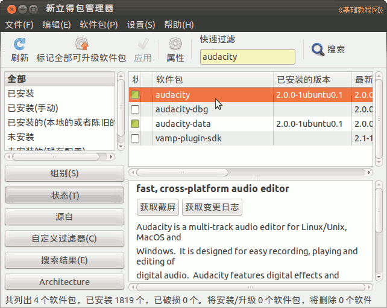
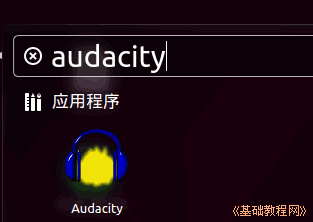
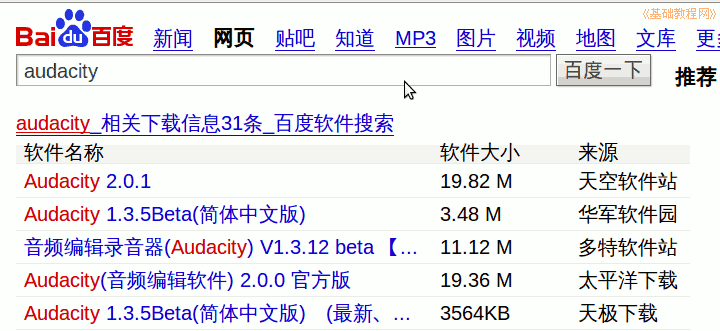

Audacity 音频编辑器教程
作者：TeliuTe 来源：基础教程网
一、下载和安装 返回目录 下一课Audacity 是一款免费的音频编辑软件，功能强大操作简便；
1、下载和安装
1）在 Ubuntu 的软件中心或新立得中，搜索安装 audacity 即可；

2）安装好以后，点左上角主按钮，输入 audacity 点击打开，或者依次点主按钮、菜单、过滤结果、媒体、Audacity；

3）在 Windows 中，在搜索引擎中搜索 audacity 选择一个下载站点下载即可，如果安装版有问题可以试试下载绿色版；

4）下载后双击软件包安装，注意在第一步选择语言哪里选择“中文”；
本节学习了下载和安装的基础知识，如果你成功地完成了练习，请继续学习下一课内容；
本教程由86团学校TeliuTe制作|著作权所有
基础教程网：http://teliute.org/
美丽的校园……
转载和引用本站内容，请保留版权信息和本站链接。